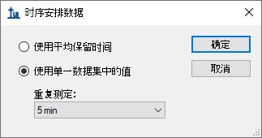
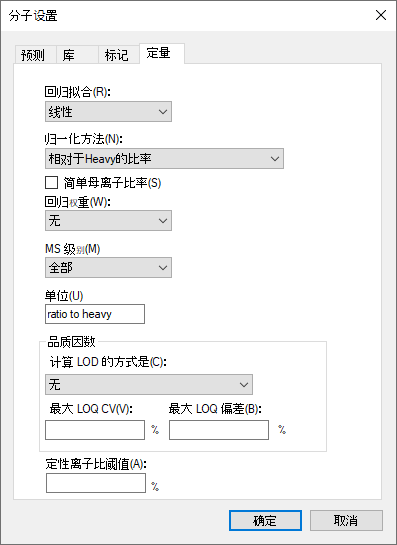
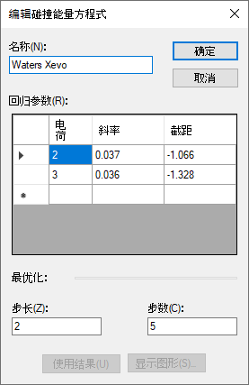
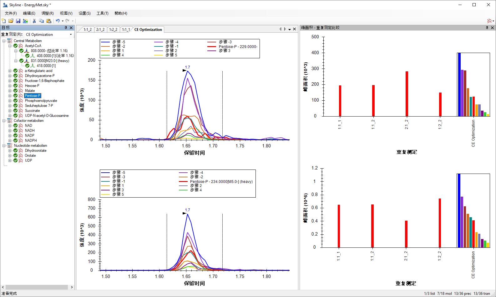
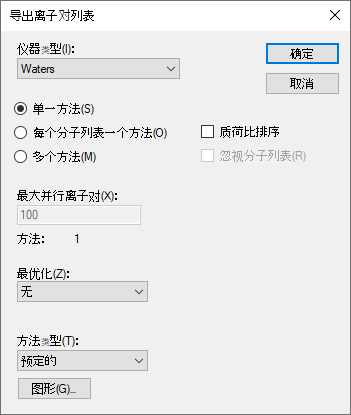

Skyline 靶向质谱环境能直观呈现导入 Skyline 文档的原始质谱仪数据信息。Skyline 最初为蛋白质组学应用而开发，其应用范畴现已延伸到小分子领域。本教程探讨使用 Skyline 进行小分子的靶向定量。
在本教程中，您将了解如何为 LC-MS/MS（三重四极杆）中的所选能量代谢物制定多元方法。通过分析该数据集，您将了解：
您还可以查看本教程所依据的第 16 堂 Skyline 教程网络研讨会的后半部分。
Skyline 旨在提供一个独立于质谱仪供应商的靶向定量质谱研究平台。该平台可以导入在不同仪器供应商的质谱仪上采集的原始数据，例如 Agilent、SCIEX、Bruker、Shimadzu、Thermo-Scientific 和 Waters。通过导入不同仪器平台的数据，极大地促进不同仪器之间的比较和多站点研究。这种方法在蛋白质组学领域已使用多年，因此在将其用于目标小分子时同样奏效。
如果您尚未观看过“Skyline 小分子目标”教程，请现在查看教程，以掌握一些有关 Skyline 如何处理小分子描述（包括化学公式和加合物）的基础知识。
要开始本教程，请下载下列 ZIP 文件：
https://skyline.ms/tutorials/SmallMoleculeMethodDevAndCEOptimization.zip
将文件解压到您电脑上的某个文件夹，比如：
C:\Users\bspratt\Documents
该操作将创建一个新文件夹：
C:\Users\bspratt\Documents\SmallMolMethodCE
其中将包含本教程所需的所有文件。
如果您在开始学习本教程之前就一直在用 Skyline，最好将 Skyline 恢复为默认设置。要恢复默认设置：

该 Skyline 实例中的文档设置现已重置为默认值。
由于本教程涵盖小分子主题，您可以执行以下操作来选择分子界面：

Skyline 将在分子模式下运行，Skyline 窗口右上角 随之显示分子图标 。原始蛋白质组学菜单和控件现已隐藏，便于您专心从事小分子分析。
。原始蛋白质组学菜单和控件现已隐藏，便于您专心从事小分子分析。
本教程中的离子对列表来自于一个高速 HILIC 方法，其依据为 Guder 等人，《分析化学》，2017 年 2 月 7 日；89(3):1624-1631。然后，结合使用 Acquity UPLC 与 Waters Xevo TQ-S 三重四级杆质谱仪，收集本教程中使用的原始数据。
以下就是发布的离子对列表：
它提供了有关轻母离子 (12C)、重母离子 (13C)、碎片离子质荷比以及每个分子电荷的信息，本教程中仅使用负离子模式的条目。碰撞能量 (CE) 值来自 Agilent 6495 三重四极杆质谱仪。与过去收集所使用数据文件的操作一样，即便您要为 Waters Xevo TQ-S 制定新方法，也要将这些作为切入点。
您只需在 Excel 或其他电子表格编辑器中略施操作，就能重新格式化上表，以便 Skyline 进行读取。例如，每个离子对的重母离子和轻母离子应位于仪器离子对列表中的不同行。在本教程开始时创建的文件夹包含的“Energy_TransitionList.csv”文件内，可以找到此重新格式化的结果。
由于“Energy_TransitionList.csv”文件格式化为包含 Skyline 能够识别的列标题，因此您可以使用菜单选项编辑 > 插入 > 离子对列表来避免手动使用插入离子对列表表单，直接将所有信息（包括标题行）粘贴到 Skyline 目标视图中。若要这样做，请执行下列步骤：
此时 Skyline 窗口将显示如下：

| 注：在本教程中，您仅提供这些目标的质荷比和电荷值。 Skyline 可以接受更高级别的描述，包括化学公式和重同位素标记等。提供化学公式对于处理全扫描、高分辨率数据特别有用，因为它支持由 Skyline 计算同位素分布；但是，对于这样的 SRM 数据，使用质荷比和电荷便足矣。 |
接下来，您将执行以下步骤来更新离子对设置，以匹配本教程中的仪器方法和质谱仪实验结果：

稍后，您将在 Waters Xevo 中进行碰撞能量优化，这是方法制定和优化过程的一部分，因为从文中粘贴的起始碰撞能量最初是用于 Agilent 仪器。

您在离子对设置中已指出，此实验仅测量负电荷离子对。Skyline支持对任何类型的加合物的电离描述（“[M-H]”、“[M+Na]”等），其中包括未知的电离模式（此处使用的“[M-]”表示“负离子模式，电荷 1，不用任何已知的化学成分解释它”）。在离子类型字段中，值“f”表示将仅测量碎片离子的离子对。如果还想测量母离子，则可以使用“f，p”。
其余三个选项卡的状态则不适用（库和全扫描）或已设置可以接受的默认值（仪器）。
现在按如下方式保存当前的 Skyline 文档：
通常来说，如果在运行 Skyline 的电脑上安装了用于质谱仪的仪器控制软件，则 Skyline 可以使用指定的模板文件导出为原生仪器的方法。某些 Thermo 仪器要求在仪器控制电脑上完成这项操作。
如果尚未安装 Waters MassLynx，可跳至下一节 - “导出离子对列表”。
继续则导出两种方法，其中一种方法需要 2 分钟，另一种方法需要 5 分钟，如下所示：
导出方法表单现在应显示如下：

如果您的电脑上没有必备的仪器供应商软件用来直接输入导出的仪器方法文件，则可以导出对应仪器的离子对列表，日后再用供应商软件将其导入至仪器方法。导出离子对列表的步骤与导出未安排时序方法的步骤非常相似，不同之处在于没有模板文件：
导出方法表单现在应显示如下：

此时，您将以 2 分钟和 5 分钟的梯度时间来收集样品数据。本实验中使用的样品来自市售试剂盒，是从大肠杆菌提取的轻：重代谢物按照 1:1 的比例混合而成（来自 Cambridge Isotope Laboratories 且通过认证的大肠杆菌裂解液）。
两次的质谱仪运行结果位于本教程开始时创建的文件夹下的“Unscheduled”子文件夹中。名称中包含“01a”的文件是以 2 分钟的梯度时间收集，名称中包含“02a”的文件则以 5 分钟的梯度时间收集。您要检查这些结果，以确定哪个梯度时间对该实验最为有效。
执行以下步骤，将这些文件导入您创建的文档中：
导入结果文件表单应显示如下：

Skyline 会注意到这些文件名含有共同的前缀和后缀，并显示以下表单：

这些文件会相对快速地导入，您的 Skyline 主窗口将显示如下：

重复测定名称“1”和“2”不是很有意义，但是您可以执行以下操作，将它们更改为更具描述性的名称：

执行该操作后，Skyline 主窗口应显示如下：

要利用 Skyline 摘要图在一个屏幕上查看多个重复测定的统计信息，请执行以下操作：
Skyline 窗口将显示如下：

查看峰面积 – 重复测定比较视图，可以发现 5 分钟梯度时间的峰面积通常比 2 分钟梯度时间的峰面积大。您可以选择进行技术性重复测定，以排除结果的随机变化。在这种情况下，使用梯度时间为 5 分钟的方法时，虽然许多分析物显示出更高的峰面积，但非全部都显示出较高的峰面积，这可能是由于分析物进行了更好的分离，以及降低了离子抑制（也称为“基质效应”）。基于此，5 分钟的梯度时间对于本实验来说或许是更好的色谱选择。
仔细检查色谱峰也很有用：

确定 5 分钟的梯度时间后，现在可以生成已安排时序的方法或离子对列表。在本教程的其余部分中，假定您尚未安装 MassLynx 仪器控制软件，并且将生成离子对列表，而不是生成原生方法。根据上文介绍的仪器方法的创建方式，您可以在需要时使用模板方法进行替代。
首先设置一个保留时间窗口，该窗口将导出到离子对列表。
分子设置表单现在应显示如下：

现在可以按以下方式导出离子对列表文件：
执行此操作后，导出离子对列表表单应显示如下：

系统将询问您要使用哪项重复测定进行洗脱。
时序安排数据表单应显示如下：

系统将提示您输入离子对列表文件名。
现在您将使用新生成的含安排时序的离子对列表来收集质谱仪上的新结果。本教程是在有着不同轻重比率的三次运行中收集的数据。混合比率有 1:1、1:2 和 2:1。要将这些运行导入文档中，请执行以下操作：
这样一来，导入结果表单将显示完整的文件名（已去除扩展名），与 Skyline 将使用的文件名保持一致，如下所示：

当处理完以2分钟为梯度的数据以后，可按以下步骤将其从文档中删除：

现在按以下方式重命名其余 4 项重复测定：
| 注：也可以使用包含重复测定 > 重复测定名称字段的自定义报告模板，在文档网格中完成重命名。 |
完成后，管理结果表单应显示如下：

通过查看峰面积 - 重复测定比较视图，可以直观地确认样品的已知比率。
可以看到，这些峰面积的预期比率与已知的混合物比率相符。在保留时间 - 重复测定比较视图中，还可以看到每次运行中，Acetyl-CoA的洗脱稳定在1.55分钟左右，这在已安排时序的运行中尤其稳定。
您可以使用 Skyline 校准功能评估已知浓度比和积分色谱峰面积之间响应的线性度。
完成上述操作后，文档网格应显示如下：

在检查这些运行的标准曲线之前，需执行以下操作来指定一些定量设置：
分子设置表单现在应显示如下：

要检查标准曲线图，请执行以下操作：
您应当看到如下所示的图：

此处评估的三种稀释比率显然并非呈现出预想的线性。因此，需要额外执行一些工作，才能获得这项特定检测的线性动态范围信息。
接下来您需要收集数据，以确定每个离子对的最佳碰撞能量，以期在对分析物的测定中，获得尽可能高的灵敏度。请记住，原始碰撞能量值来自于在不同供应商提供的仪器 (Agilent 6495) 上执行且已发布的实验。Skyline 将帮助生成一系列已计划时序的离子对列表，其碰撞能量将围绕原始离子对列表中指定的初始碰撞能量而自动变化。在本教程中，我们使用了相同的离子对列表，用在与其他运行中使用的相同 Waters Xevo TQ-S上收集了新结果。您将导入这些运行，并使用 Skyline 为 Waters 仪器选择最佳 CE 值。
首先检查碰撞能量设置，如下所示：
随即打开编辑碰撞能量方程式表单，其中的优化部分中的设置应确保为：

进行这些设置后，Skyline 对每个离子对生成 11 项测量值，碰撞能量以 2 伏特的增量上下变化，围绕指定的原始值在每个方向上前进 5 步，总共进行 11 次测定。通常的建议是从较大的步长（2 伏或 3 伏）开始，然后可以选择以较小的步长（1 伏）重复优化，以便观察步长之间的信号变化是否足以达到精致优化的效果。
在导出用于执行优化的离子对列表之前，请在离子对设置 - 预测”选项卡中进行以下最终调整：
离子对设置表单现在应显示如下：

现在，您可以导出已安排时序的离子对列表，这样 Skyline 就可以为本实验中的目标待测物确定最佳 CE 值。同样，在安装了仪器控制软件的电脑上进行处理时，一般最好导出原生方法，但在本教程中将继续导出离子对列表。
请记住，优化过程会将目标列表中的 36 个离子对乘以 11，即总共提供仪器必须测量的 396 个离子对。
导出离子对列表表单现在应当显示如下：

请注意，当您选择进行这种已安排时序的采集时，每次进样的最大离子对数量字段名称已变为最大并行离子对。考虑一下怎样的时序安排，可避免在每个周期运行中测量的所有离子对。 Skyline 会自动执行这种计算，以确保仪器在任何周期内测量的数量都不超过 100，以确保所需的驻留时间和测量的点可以覆盖整个色谱峰。尽管如此，该表单中的方法：5 标记指明，它将采用 5 个单独的离子对列表，并在质谱仪中运行 5 次，以测量执行优化所需的 396 个离子对，同时在同一次运行中对每种分析物的所有离子对进行测量。
系统将询问您要使用哪项重复测定进行洗脱。
时序安排数据表单应显示如下：

系统将提示您输入离子对列表文件名。
这将生成 5 个文件：
我们使用相同的离子对列表对每个 1:1 混合样本进行一次测量。要执行预期的优化，现在应按以下指示导入生成的数据文件：
在先前的每项导入中，您是想将每个数据文件视为对所有目标离子对进行的一整套测量结果。但在本例中，您想将五个 CE 优化运行组合成一套符合逻辑的目标测量结果。若要执行此操作，请对导入结果表单进行以下调整：
该表单现在应显示如下：

导入结果文件表单应显示如下：

这些文件将作为单个名为“CE Optimization”的重复测定进行加载，如重复测定比较图中最右侧的值以及色谱图中最右侧选项卡中所示，该重复测定应出现在目标视图的重复测定下拉列表中，如下所示：

但是，您仍需执行以下操作，才能在目标视图中直观显示于 11 种不同 CE 电压下对每个离子对进行的 11 次不同测量：
Skyline 主窗口应显示如下：

峰面积 - 重复测定比较视图现在在单独的窗格中显示重离子对和轻离子对，并且轻离子对在重离子对上方。在“CE Optimization”重复测定中，各个条形表示逐步提高碰撞能量的效果。红色表示原始 CE 值（在与 Agilent 6495 仪器结合使用时），其他条形表示距该值 2eV 步的效果。您可以看到，对于 Acetyl-CoA 而言，至少使用原始值或 -2eV 步长时可实现最大的峰面积。关闭图例后更容易看清楚：
Skyline 应显示如下：

现在您可以探索其他分子，了解原始碰撞能量接近最佳状态的程度。为此，请执行以下操作：
查看 Pentose-P 的各种 CE 步长值的色谱图，很显然，资料中的 CE 值对于 Waters Xevo TQ-S 上测定的该分子并非最佳值。最佳 CE 值（步长为 -5，最左侧的蓝色条形）是测定的最低 CE 值。

考虑到该范围末尾的趋势，可能需要进一步研究才能得出该化合物真正最佳的 CE 值。因此，在像这样的仪器供应商之间进行转换时，也可能需要从较大的步长（例如 3 伏）开始。即便如此，“步长 -5”（蓝色条形）CE 值相较于初始（红色条形）CE 值有了明显改善。
您可以继续创建一个已安排时序的新离子对列表，该列表使用观察到的最有效的 CE 值，如下所示：
这次只需再次使用单一方法，因为只要对每个离子对使用一个最佳 CE 值。
导出离子对列表表单现在应当显示如下：

系统将询问您要使用哪项重复测定进行洗脱。
可以使用您认为其保留时间最具代表性的测量（通常是最近的测量），因为保留时间会随着色谱柱的老化而漂移。本例中的保留时间非常稳定，这意味着此表单中的几乎所有选项都可以用于先前分配的时序安排为 1 分钟的窗口。无论您选择何种选项，都是从具有 CE 优化数据的唯一重复测定来获取最佳 CE 值。
时序安排数据表单应显示如下：

系统将提示您输入离子对列表文件名。
此时比较优化的起点和终点会很有趣，起点是文献中以单一文件形式发布的 Agilent 6495 质谱仪中的 SRM 离子对和 CE 值；终点则是针对 18 种能量代谢物及内标的保留时间时序安排进行的 CE 优化的 SRM 方法，以便在您计划的仪器上（或是在编写本教程时所用的仪器 Waters Xevo TQ-S 上）使用。
如果您希望进一步优化 Pentose-P 的 CE（请注意，目前确定的最佳 CE 值位于测试范围的边缘），则可以使用 EnergyMet_5minutes_optimal.csv 离子对列表作为新一轮 CE 优化的切入点来重复该过程，并且步长可能为 1 伏，步数可能更少。
如前所述，在执行迭代优化时，开始最好从较大的步长值来广泛测试 CE 值，然后在以后的迭代中改为较小的步长，以缩小到最终值。执行 CE 优化时，如果在设置菜单、离子对设置、预测下面选中了使用优化值按钮，新导出的方法或离子对列表自动将把最佳碰撞能量整合到这种方法中。除了检查是否需要探索更广泛的 CE 优化范围之外，无需手动管理 CE 优化数据。
在本教程中，您利用已发布的实验数据学到了如何创建以稳定同位素标记的小分子为目标的 Skyline 文档，为这些小分子指定母离子质荷比、子离子质荷比和碰撞能量值。通过导入来自于 Waters Xevo TQ-S（使用 Agilent 6495 三重四极杆质谱仪的初始 CE 值）的多个重复测定数据集，您对小分子进行了保留时间时序安排和碰撞能量优化。并了解到最初为靶向蛋白质组学应用而创建的 Skyline 功能中，有多少现成的功能可以应用于小分子数据。对于 Skyline 而言，对非蛋白质组分子的支持仍是一个相对较新的功能领域。因此，您可以期待它能不断获得快速的提升。